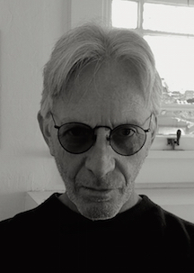

Jester-Knight
Literature
Film
Music
Visual Art
Tributes
Submissions
Links
Contact
Dah

Biography
Dah’s seventh poetry collection is Something Else’s Thoughts (Transcendent Zero Press)
and his poems have been published by editors from the US, UK, Ireland, Canada, Spain,
Singapore, Poland, Philippines, Australia, Africa, Italy, and India. He is a Pushcart Prize
and Best Of The Net nominee and the lead editor for the poetry critique group, The Lounge.
Dah lives in Berkeley, California where he teaches yoga to children in public and private schools
while working on the manuscript for his ninth poetry collection. His eighth book is Full Life
In The Day Of A Poet, selected poems (Cyberwit Press, 2019).
www.dahlusion.wordpress.com
Click below for Dah's work
Balance: Seven Poems (.pdf) NEW!!!
10 Poems (.pdf)
We Turn Into Earth (Poems) (.pdf)